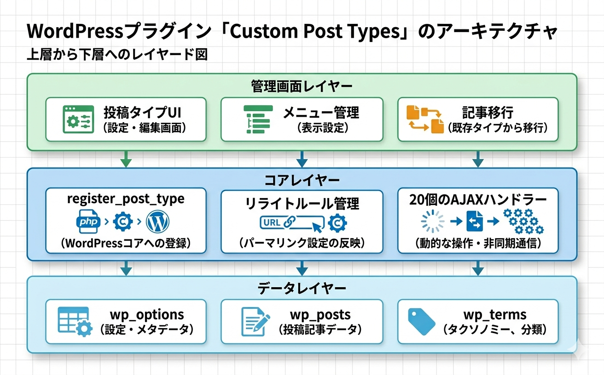

トラブルシューティング
よくある問題とその解決方法、プラグインの内部アーキテクチャ、動作要件・技術仕様をまとめています。
カスタム投稿タイプが表示されない
症状
プラグインで投稿タイプを作成したが、管理画面のメニューやフロントエンドに表示されない。
原因と解決策
プラグインが有効化されているか確認 - WordPress 管理画面の プラグイン ページで、「Kashiwazaki SEO Custom Post Types」が有効になっているか確認してください。
フロントエンド表示の確認 - フロントに出ない場合、投稿タイプの設定で次の 2 つを両方確認してください。public（公開）と publicly_queryable（パブリッククエリ可能）。public は WP コア側の表示制御の親フラグで、publicly_queryable は実際に URL 経由でクエリできるかを決めます。どちらかが OFF だとフロントに出ません（v1.0.25 から両者とも DB 値が意図通りに反映されるようになりました）。
管理画面表示の確認 - 管理画面サイドメニューに出ない場合、show_ui（管理画面 UI を生成）と show_in_menu（サイドメニューに表示）を両方確認してください。show_ui が OFF だと編集画面 UI 自体が作られず、show_in_menu が OFF だと UI はあるがサイドメニュー項目が出ません。両方 ON でないと管理画面に表示されません。
強制再登録を実行 - 投稿タイプ一覧の 「再登録」 ボタンをクリックして、WordPress への登録を強制的に再実行してください。これにより多くの表示問題が解決します。
投稿タイプの URL で 404 エラーが発生する
症状
カスタム投稿タイプの記事にアクセスすると 404 エラーが表示される。
原因と解決策
パーマリンク構造を確認 - 設定 > パーマリンク設定 で「投稿名」形式、または /%postname%/ を含むカスタム構造が選択されていることを確認してください。デフォルトの「基本」形式（?p=123）では本プラグインの階層 URL 機能は動作しません。
リライトルールをフラッシュ - 設定 > パーマリンク設定 で何も変更せずに 「変更を保存」 をクリックしてください。本プラグインの階層 URL 用カスタムリライトルールが再生成されます。
親ディレクトリの設定を確認 - 階層 URL で 404 が出る場合、親ディレクトリに指定したスラッグが実際に存在する固定ページ・CPT であるか確認してください。存在しない親スラッグを指定するとルーティングが壊れます。
スラッグの競合を確認 - 投稿タイプのスラッグが、既存の固定ページやカテゴリのスラッグと重複していないか確認してください。本プラグインは WordPress 予約語を自動回避しますが、ユーザー作成の固定ページとの衝突は検出できません。
不正な親経由のアクセスかを確認 - 本プラグインの KSTB_Permalink_Validator は、正しい canonical URL 以外（不正な親パス経由）を意図的に 404 にします。これは重複コンテンツ防止のための仕様です。
ヒント
階層 URL の構造が想定通りか確認するには、該当投稿の編集画面で右上の「パーマリンク」表示を確認してください。親ディレクトリが正しく組み込まれた URL になっているはずです。
パーマリンクの変更が反映されない
症状
投稿タイプの設定を変更したのに、URL や管理メニューに反映されない。
原因と解決策
再登録ボタンで強制再読み込み - 投稿タイプ一覧から該当 CPT の 「再登録」 ボタンをクリック。unregister_post_type() → register_post_type() の順で再登録され、リライトルールも再フラッシュされます。
ブラウザキャッシュをクリア - 管理画面の JavaScript/CSS がキャッシュされている可能性があります。Ctrl+Shift+R（Mac: Cmd+Shift+R）でハードリロードを試してください。
記事移動が途中で止まる
症状
投稿タイプ間の記事移動処理がタイムアウトする、またはエラーが表示される。
原因と解決策
PHP の実行時間制限 - 大量の記事を一度に移動する場合、PHP の max_execution_time がタイムアウトします。小分けして移動するか、サーバーの設定を一時的に拡大してください。
移動元・移動先の確認 - 移動元と移動先の投稿タイプが両方登録済みであることを確認してください。無効化された CPT への移動はエラーになります。
ブラウザのコンソールを確認 - 開発者ツール（F12）の Console タブで、AJAX エラーの詳細を確認してください。権限エラー、nonce 切れ、サーバーエラーなどの情報が得られます。
メニュー割り当てが反映されない
症状
投稿タイプのメニュー割り当て設定を変更しても、管理画面のメニュー構造に反映されない。
原因と解決策
ページを再読み込み - 管理画面をリロード（F5）して、メニューの変更が反映されるか確認してください。サイドメニューは保存時に自動で再レンダリングされますが、ブラウザキャッシュが残る場合があります。
投稿タイプを再登録 - メニュー構造は投稿タイプの show_in_menu 引数で決定されます。設定変更後、投稿タイプを再登録してください。
AJAX 操作でエラーが発生する
症状
投稿タイプの作成・編集・削除などの管理画面操作でエラーメッセージが表示される。
原因と解決策
nonce の有効期限 - 管理画面を長時間開いたままにすると、セキュリティトークン（nonce）が期限切れになります。ページをリロードしてから再度操作してください。
他プラグインとの競合 - 他のカスタム投稿タイプ系プラグイン（Custom Post Type UI、ACF 等）が同名の投稿タイプを登録していないか確認してください。本プラグインの登録が別プラグインで上書きされる場合があります。
WP_DEBUG の有効化 - wp-config.php に define('WP_DEBUG', true); を設定し、wp-content/debug.log を確認してエラー詳細を把握してください。
旧 URL からのリダイレクトが効かない
症状
投稿のスラッグを変更したのに、旧 URL にアクセスしても新 URL に 301 リダイレクトされない。
原因と解決策
v1.0.20 以降にアップデート - 階層的 CPT の旧スラッグ追跡機能は v1.0.20 で追加されました。それ以前のバージョンから保存した投稿では _wp_old_slug メタが記録されていない可能性があります。
階層構造の設定を確認 - 本プラグインの旧スラッグ追跡は、階層的カスタム投稿タイプ（hierarchical=true）の WordPress コアの欠落を補完する仕組みです。hierarchical=false の投稿タイプでは WordPress 標準の旧スラッグ追跡が動作します。
アーカイブ表示モードが意図通りにならない
症状
投稿タイプのスラッグトップ（https://example.com/{slug}/）にアクセスしたときに、期待した投稿一覧ではなく 404 が出る、固定ページが表示される、空ページになる、などのケース。
原因と解決策
本プラグインの archive_display_type には 4 つのモードがあります。実装は includes/class-archive-controller.php にあり、それぞれの挙動と典型的なトラブルは次の通りです。
| モード | 期待される表示 | 意図通りにならない場合の確認ポイント |
|---|---|---|
default（指定なし） | has_archive=OFF のときに、同名スラッグの固定ページ・通常投稿・他カスタム投稿があればそれを表示する（フォールスルー）。該当する投稿が無ければ 404 | 投稿一覧アーカイブを出したい場合は default ではなく post_list を選ぶ必要があります。default は「特別な処理をしない」モードで、has_archive=OFF のときは同名パスの投稿検索だけを行います。 |
post_list（アーカイブ一覧を表示） | 本プラグインが投稿一覧アーカイブを強制表示する | has_archive が ON か。archive_include_children を ON にしているのにスラッグの下の階層子孫が出ない場合は次の節を参照。 |
custom_page（固定ページを表示） | archive_page_id で指定した固定ページを表示 | 指定した固定ページが存在し公開（publish）状態か。CPT スラッグと同じスラッグの固定ページを別途作っていないか（重複すると WordPress 標準のルーティングが固定ページ側を優先することがあります）。 |
none（表示しない） | 強制的に 404 を返す。同名スラッグの固定ページがあってもフォールスルーしない | 「none」モードは「このスラッグへのアクセスは絶対に表示させない」用途。同名スラッグの固定ページに素通しさせたい場合は default を選んでください（default は同名ページがあれば表示します）。 |
切り分け手順
(1) 投稿タイプ編集画面の アーカイブ表示モード を確認 → (2) has_archive の ON/OFF を確認 → (3) パーマリンク再保存 → (4) 上記モード別の確認ポイントを順に当てはめ。
archive_include_children が効かない
症状
階層 URL を持つ CPT の投稿一覧に、子階層配下の投稿が含まれない。
原因と解決策
本プラグインの archive_include_children（子階層の投稿を含む）は、すべてのケースで効くわけではありません。実装上、次の 3 条件を すべて満たす 投稿タイプアーカイブのメインクエリでのみ作用します。
has_archive= ON（アーカイブ自体が有効）archive_display_type=post_list（モードが post_list）archive_include_children= ON（DB 値で 1）
個別投稿ページや、サブクエリ（WP_Query の手動呼び出し、ウィジェットの最近の投稿など）には適用されません。子階層が一覧に出ない場合は、まず上記 3 条件が満たされているかを確認してください。
短縮 URL（?p=ID や ?post_type=...）の挙動が想定と違う
症状
カスタム投稿タイプの記事に対する ?post_type=foo&p=123 形式や ?p=123 形式の URL でアクセスしたとき、期待した動作にならない（リダイレクトされてほしいのに表示される、あるいはその逆）。
原因と解決策
本プラグインは allow_shortlink という DB カラムで CPT 単位の挙動を制御しています。デフォルトは OFF。挙動の対応関係は次の通りです（既存の投稿タイプ管理ページの記述と一致）。
| 設定 | 動作 |
|---|---|
allow_shortlink = OFF（デフォルト） | ?post_type=foo&p=123 形式のクエリ URL でアクセスすると、正規パーマリンク URL（例: /blog/post-slug/）へ 301 リダイレクト される。SEO 上は重複 URL を排除できるためこちらを推奨。 |
allow_shortlink = ON | クエリ URL 形式でのアクセスを 許可 する（リダイレクトしない）。短縮 URL を運用上必要とするケース向け。 |
意図と逆の挙動になっている場合は、CPT 編集画面の 「短縮 URL 形式（?p=ID）を許可」 チェックボックスを確認してください。
補足
301 リダイレクトを担うのは KSTB_Permalink_Validator です。リダイレクトが効かないように見える場合、リライトルールが古い可能性があるため 設定 > パーマリンク設定 を一度開いて保存し直してください。
publicly_queryable / show_ui / query_var を OFF にした場合の影響
症状
これらのチェックを意図的に OFF にしたところ、フロントエンド表示や AJAX 操作が思わぬ形で動かなくなった、または管理画面に CPT が出てこない。
原因と解決策
本プラグインは v1.0.25 以降、編集フォームの設定値を WordPress に そのまま反映 します。それぞれを OFF にすると次の影響があります。
| 設定 | OFF にした場合の影響 |
|---|---|
publicly_queryable | URL クエリ経由で投稿を取得できなくなり、フロントエンドの個別ページ・アーカイブともに表示されなくなる。public が ON でも、publicly_queryable が OFF だと事実上フロントには出ません。 |
show_ui | WordPress が編集画面の UI そのものを生成しなくなり、投稿一覧・編集画面・新規追加画面のいずれも開けなくなります。show_in_menu が ON でもメニューから飛んだ先がありません。 |
query_var | WordPress 標準の公開クエリ変数 URL（例: ?post_type=foo）が無効化されます。WP_Query(['post_type' => 'foo']) のような直接呼び出しや、本プラグインの階層 URL ルーティング（post_type / name 標準クエリ変数で解決）には影響しません（v1.0.25 で確認済み）。とはいえ、外部プラグインが ?post_type=... 形式に依存している場合があるので、明示的な必要がない限り ON のまま推奨します。 |
注意
これらの設定は通常 ON のまま運用してください。意図的に OFF にする場合は、WordPress 全体への影響を理解した上で行い、本プラグインのトラブルとして報告される事例の多くがこれらの誤設定に由来します。
よくある質問
| 質問 | 回答 |
|---|---|
| データベースに新しいテーブルは作られますか？ | はい。2 つのカスタムテーブル {prefix}kstb_post_types（投稿タイプ定義）と {prefix}kstb_menu_categories（メニューカテゴリー定義）が作成されます。{prefix} はサイトの WordPress テーブル接頭辞（デフォルトは wp_、$wpdb->prefix の値）です。設定データの大半はこの 2 テーブルに保存されます。 |
| 外部サービスと通信しますか？ | いいえ。外部 HTTP 通信、Cron ジョブ、メール送信のいずれも行いません。完全にサーバー内で完結します。 |
| フロントエンドに JSON-LD 等を出力しますか？ | いいえ。JSON-LD（BreadcrumbList、Article など）や meta タグの出力は行いません。構造化データはテーマや SEO プラグイン側で対応してください。ただし階層 URL を持つ CPT のページでは、正規 URL（canonical）への link 要素を wp_head に補助的に出力する実装があります。 |
| 他の SEO プラグインと併用できますか？ | はい。Yoast SEO、Rank Math、SEO SIMPLE PACK 等と併用できます。本プラグインはカスタム投稿タイプの管理と URL 構造を担当し、SEO プラグインはメタタグや構造化データを担当する、という役割分担が可能です。 |
| マルチサイトに対応していますか？ | 各サブサイトごとに個別有効化する使い方のみをサポートしています。v1.0.28 以降、ネットワーク一括有効化 (Network Activate) は明示的にブロックされており、ネットワーク管理画面から有効化しようとすると deactivate_plugins() + wp_die() でエラーメッセージが表示されます。理由: 本プラグインはカスタムテーブル ({prefix}kstb_post_types 等) をサイトごとに作成しますが、現行実装は switch_to_blog() ループでサブサイトを巡回しないため、ネットワーク一括有効化するとメインサイトにしかテーブルが作成されず他のサブサイトで動作しなくなるためです。Multisite 環境で本プラグインを使う場合は、各サブサイトの管理画面にアクセスして「プラグイン」画面から個別に有効化 してください。ネットワーク全体の統一設定機能は現時点で提供していません。 |
| プラグインを削除するとデータはどうなりますか？ | プラグインを無効化しても、カスタムテーブル（{prefix}kstb_post_types、{prefix}kstb_menu_categories）と投稿データ自体は保持されます。完全にアンインストールしてもデフォルトではテーブルは削除されません。必要であれば phpMyAdmin などで手動削除してください。 |
| 投稿タイプの内部スラッグを変更できますか？ | 編集フォームに内部スラッグの専用入力欄はありません。ただし、url_slug（公開 URL スラッグ）を編集すると hidden の内部スラッグが連動して再生成（最大 20 文字に切り詰め）され、保存時に DB の slug カラムも更新されます。内部スラッグを保持したい場合は url_slug を変更しないでください。投稿タイプ自体を別名に変えたい場合は、新しい名前の CPT を作成して記事移行機能で記事を移動するのが安全です。 |
| ブロックエディタ（Gutenberg）に対応していますか？ | はい。すべてのカスタム投稿タイプはデフォルトで REST API に対応し、ブロックエディタが使用できます。REST API 対応は show_in_rest の DB 値に従って決定されます（現行バージョンの管理フォームは常に ON で作成）。 |
| 親ディレクトリの多段階層はどこまで対応？ | 再帰関数 build_full_path() が循環参照を検出しつつ多段でパスを構築するため、ロジックとしては階層数の上限はありません。ただし実装上の制約として、parent_directory カラムは varchar(100) なので 1 件あたり 100 文字までしか保存できません（途中の深い階層を含めたパス全体ではなく、その CPT に直接設定する親スラッグ文字列の長さ）。さらに、過度に深い階層（5 段以上）は URL が長くなり SEO 的にも管理的にも不利なため、2〜3 段程度を推奨します。 |
| 他プラグインで作成した CPT を管理できますか？ | できません。本プラグインは自身が作成した投稿タイプのみを管理します。他プラグインや functions.php で登録された CPT には影響しません。 |
プラグインの内部アーキテクチャ

本プラグインは以下のクラス群で構成されています。トラブルシューティングの際、エラーログに出てくるクラス名から該当機能を特定する参考にしてください。
| クラス名 | 責務 |
|---|---|
KSTB_Database | カスタムテーブル（{prefix}kstb_post_types, {prefix}kstb_menu_categories）への CRUD、スキーマ自動マイグレーション、循環参照検出。 |
KSTB_Post_Type_Registrar | 投稿タイプの WordPress への登録、register_single_post_type()、階層 URL の build_full_path()、resolve_hierarchical_request()。 |
KSTB_Post_Type_Force_Register | 読み込み順序などで登録に失敗した CPT の強制再登録（自動修復）。 |
KSTB_Archive_Controller | アーカイブ表示の 4 モード制御、子階層を含むアーカイブ、template_control()。 |
KSTB_Parent_Selector | 親ディレクトリの解決、親ページ選択メタボックス、リライトルール生成、save_parent_page_data()。 |
KSTB_Permalink_Validator | 正規 canonical URL 以外の不正な親経由アクセスを 404 にする検証、WordPress 標準の canonical redirect の無効化。 |
KSTB_Old_Slug_Tracker | 階層的 CPT の _wp_old_slug メタ保存（WordPress コアの欠落を補完）。 |
KSTB_Post_Mover | 投稿タイプ間の記事移動、タクソノミーフィルタリング、バリデーション。 |
KSTB_Parent_Menu_Manager | カテゴリーフォルダによる管理メニューの分類、親メニューページの自動生成。 |
KSTB_Admin | 管理画面の登録、スクリプト/スタイルの読み込み、説明書タブの docs/ 動的読み込み。 |
KSTB_Ajax_Handler | すべての wp_ajax_kstb_* エンドポイント（CPT 保存/削除/編集、カテゴリー操作、記事移動、親ページ検索など）。 |
動作要件
| 項目 | 要件 |
|---|---|
| WordPress | 5.0 以上（推奨: 最新版） |
| PHP | 7.0 以上（推奨: 7.4 以上） |
| 必須 PHP 拡張 | DOMDocument / DOMXPath（説明書タブの docs 動的読み込みに使用。無効でもフォールバック動作） |
| パーマリンク設定 | 「投稿名」または /%postname%/ を含むカスタム構造（「基本」形式は不可） |
| 権限 | manage_options（管理者権限） |
| 対応ブラウザ | Chrome / Firefox / Safari / Edge の最新版 |
| Cron / 外部通信 / メール送信 | いずれも不使用 |
技術仕様
- データ保存: カスタムテーブル 2 つ（
{prefix}kstb_post_types、{prefix}kstb_menu_categories）+wp_options（フラッシュタイムスタンプ等）+ 投稿メタ（_kstb_parent_page、_wp_old_slug） - AJAX エンドポイント: 18 本の
wp_ajax_kstb_*ハンドラー。すべて nonce 検証付き。権限チェックは大半がmanage_options（設定系）だが、親ページ検索kstb_search_parent_pagesのみedit_postsで動作する。 - スキーマ自動マイグレーション: プラグイン有効化時に
KSTB_Database::create_tables()がテーブルを初回作成し、以降は毎回のinitフック内でKSTB_Database::update_database()が既存テーブルのカラム追加（ADD COLUMN IF NOT EXISTS 相当）を自動実行します。有効化時にはupdate_database()は呼び出されません。 - フロントエンド出力: JSON-LD / meta タグは出力しない。階層 URL を持つ CPT のページでは、正規 URL への canonical link 要素を
wp_headに補助的に出力する（構造化データは別途補完が必要）。 - フック登録数:
init（優先度 5）、template_redirect、request、post_type_link、save_post、admin_menu、admin_enqueue_scripts、wp_ajax_kstb_*など合計 30 以上。 - 内部キャッシュ:
KSTB_Databaseに静的プロパティキャッシュ。CRUD 後に自動クリア（v1.0.25 で改善）。
問題解決の順序
問題が発生した場合、以下の順序で切り分けることを推奨します。（1）パーマリンク設定の再保存 → （2）該当投稿タイプの再登録 → （3）ブラウザキャッシュのハードリロード → （4）他プラグインの一時無効化 → （5）WP_DEBUG によるエラーログ確認。